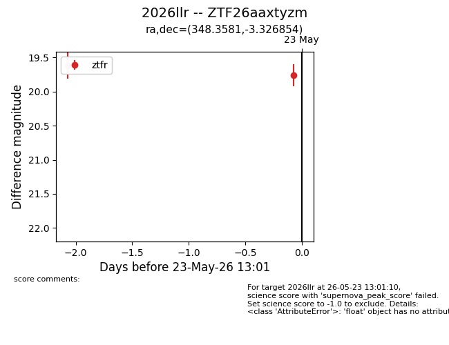
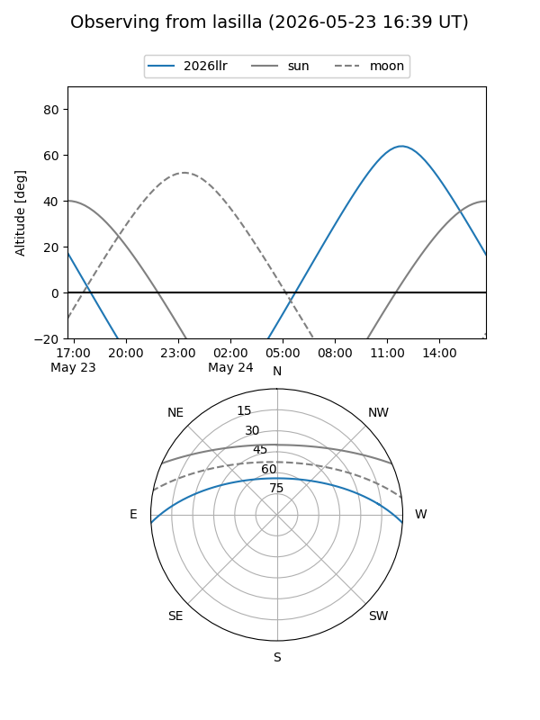
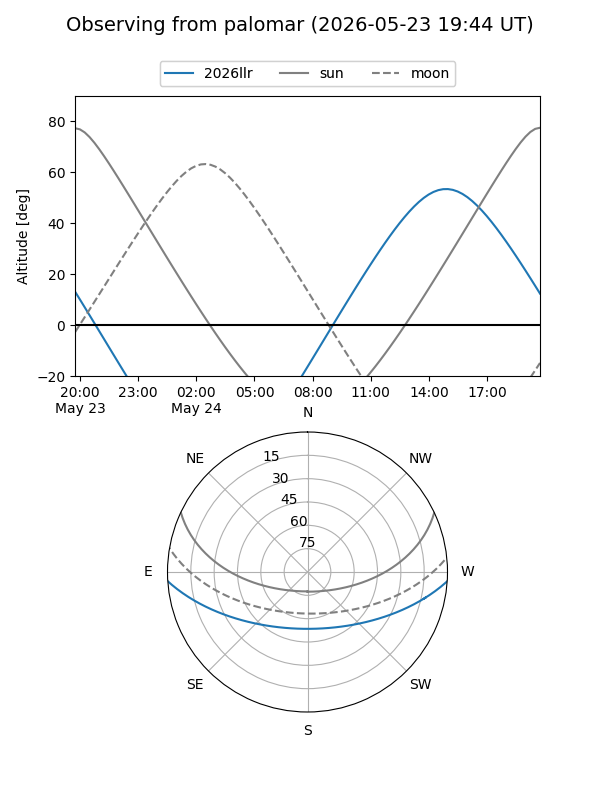

2026llr
Target 2026llr at 2026-05-23 13:03
Aliases and brokers:
lsst-FINK: link
lsst-Lasair: link
lsst-ALeRCE: link
ztf-FINK: link
ztf-Lasair: link
ztf-ALeRCE: link
TNS: link
YSE: link
alt names
ZTF26aaxtyzm (ztf,fink_ztf)
2026llr (tns,yse)
Coordinates:
equatorial (ra, dec) = 348.3581,-3.32685
equatorial (HMS+DMS) = 23:13:25.94,-03:19:36.67
galactic (l, b) = (74.1423,-56.60985)
Flags:
TNS confirmed: nan
Photometry:
last ztfr=19.76
2 ztfr detections
Lightcurve

Visibility


Additional plots